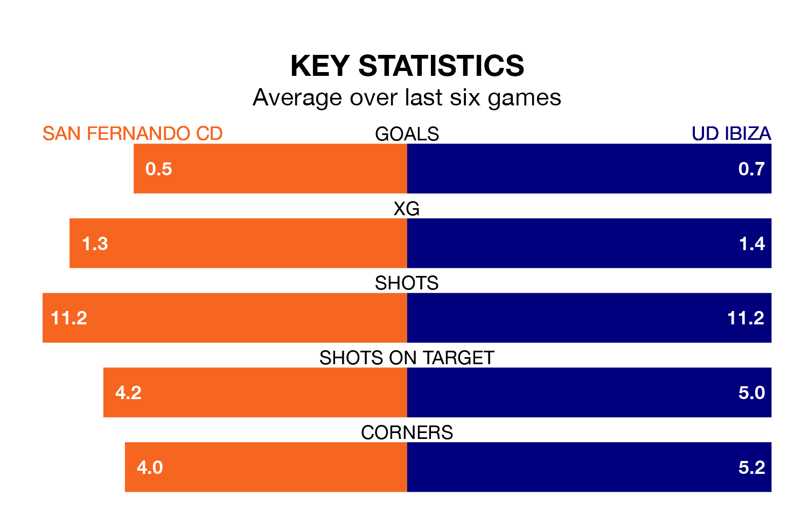

UD Ibiza travel to the Estadio Iberoamericano 2010 for Sunday's early match against San Fernando CD looking to bounce back from defeat last time out in Primera Division RFEF Group 2.
Ibiza, who sit third in the league after 29 games, fell to a 2-1 home defeat to Ceuta on March 24.
They face a San Fernando CD side who also lost their last match, a 1-0 defeat to Córdoba, and who sit 17th in the table.
With 47 goals in 29 games so far this season, Ibiza are the league's third-highest scorers with 1.6 goals per game. And they are conceding fewer than average, letting in 23 goals at a rate of 0.8 per game.
San Fernando CD, meanwhile, are below average scorers, with 1.0 goal per game, compared to a league average of 1.1. They have conceded 1.2 goals per game.
The hosts are in bad form in Primera Division RFEF Group 2, with one win and a draw from their last six games.
But with no wins and three draws over that period, the away team's form is even worse – they have taken three points from 18, compared to San Fernando CD's four.
Ibiza's Alejandro Gallar Falguera is the league's most creative player, racking up six assists in 20 appearances so far this season.
For San Fernando CD, Marcelo Ribeiro dos Santos has set up the most goals, having laid on two assists in 11 games.
Updated: 10:31 (UTC), 31/03/24